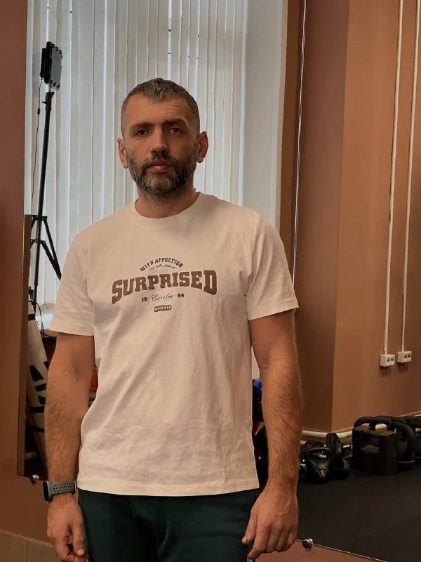
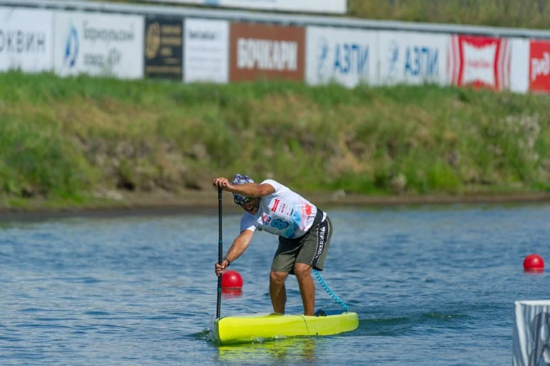

Сначала — знакомство
Обсудить цель и опыт. Посмотреть, как вы двигаетесь. Понять, с чего начать.
ПЕРСОНАЛЬНЫЙ ТРЕНЕР · КРАСНОЯРСК
Сильнее в зале. Увереннее на воде.
Свободнее в том, что любите.

Юрий РяжкинПерсональные тренировки и SUP
Юрий называет свой подход «умным фитнесом». В центре — конкретный человек, его подготовка, техника и задача, с которой он приходит.
Обсудить цель и опыт. Посмотреть, как вы двигаетесь. Понять, с чего начать.
Разобраться в движении: от дыхания и контроля тела до выполнения упражнения.
Двигаться последовательно. Учиться чувствовать нагрузку и делать занятия частью жизни.
Выберите, что вам ближе.
Детали обсудите с Юрием.
Персональная работа с тренером: знакомство с вашим опытом, внимание к технике и упражнения под вашу задачу. Без необходимости подстраиваться под темп группы.
Время, стоимость и доступность — по договорённости.

БАЛАНС. ТЕХНИКА. ВОДА.03 / ДВИЖЕНИЕ ЗА ПРЕДЕЛАМИ ЗАЛА
SUP — отдельная любовь.
И ещё один повод двигаться.
Юрий занимается SUP, тренируется на воде и участвует в заездах. Для него физическая подготовка в зале и техника гребли — части одного движения.
Хотите познакомиться с SUP или обсудить тренировку? Узнайте о сезонных форматах, месте и условиях выхода на воду.
Спросить про SUP ↗04 / ДАВАЙТЕ ПОЗНАКОМИМСЯ
«Я не работаю по шаблону».
Так Юрий описывает свой подход в канале. В его спортивной истории — бокс, борьба и SUP. Сегодня он проводит персональные и функциональные тренировки, уделяя внимание тому, как человек двигается.
Ему близка идея физической подготовки для обычной жизни: чтобы оставалось место и для зала, и для воды, и для новых маршрутов.
Прочитать знакомство в канале ↗Кадры из канала Юрия.
Без постановочных обещаний.
06 / ПЕРЕД ПЕРВЫМ ШАГОМ
Начать проще, когда всё понятно.
Остальное обсудите лично.
С разговора с Юрием: расскажите о своём опыте, цели и текущей активности. Вместе обсудите подходящий формат знакомства и тренировок.
Юрий работает в Красноярске. В канале указана студия на Взлётной. Актуальную площадку и время лучше уточнить до визита.
Уточните действующую стоимость и условия лично у Юрия. На сайте не принимается оплата и не бронируется время.
В канале представлены функциональные тренировки в мини-группах. Узнайте у Юрия о текущем наборе, формате и расписании.
Выходы на воду зависят от сезона, погоды и доступного формата. Свяжитесь с Юрием и обсудите свой опыт, подготовку и условия участия.
ВАШЕ СЛЕДУЮЩЕЕ ДВИЖЕНИЕ
Расскажите, чего хочется от тренировок.
Юрий поможет обсудить первый шаг.
Время и стоимость согласуете лично.
Здесь можно просто сделать первый шаг.